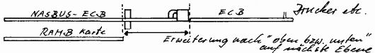

80-Bus Journal |
Mitteilungsblatt Nr. 3 · Juni 1985 |
Die Assmann- Adapterkarte kann ich für mein System nicht benutzen, denn der mechanische Aufbau meines Computers ist auf die Grundplatte N2 zugeschnitten. Daher kann ich nur echte Breite N2 (203,5mm) einbauen.
Da 2 x ECB-Karte + 3mm Steg in der Mitte genau passen, kann ich die versetzt und „oben und unten“ angelöteten Stecker leider nicht einbauen. Zudem liegt der ECB nicht auf gleicher Höhe mit der Platinenführung.
Aus diesem Grunde habe ich eine Platine mit folgenden Bedingungen erstellt:
| BILD |  |
Somit können auf dem Platzbedarf von einem NASBUS- Platz wahlweise 2 ECB oder RAM-B Karte +2 ECB- Karten untergebracht werden. Die ECB-Karten können in jedem Fall mit einem Doppel-Kartenhalter an der Erweiterung geführt werden.
Falls noch Adapterkarten benötigt werden, biete ich gerne das Original als Vorlage an.
Hans-Heinrich Gnirck, Bietigheim-Biss.
Red.: Also bitte: Falls Interesse an der neuen Adapterkarte besteht, vorbestellen unter dem Stichwort „Adapterkarte Neu“. Die Vorbestellung ist allerdings im Falle einer Kleinserie bindend (siehe Editorial 4/84).
Ebenfalls neu ist eine IN/OUT- Karte, die Karl Schulmeister mit Unterlagen von Jörg Wittich nochmals überarbeitet hat. Sie entspricht der bisherigen PIO/SIO- Karte, ist aber voll interruptfähig. Falls Interesse, siehe oben.
Auf der Schulmeister CPU- Karte (wie auch auf N2) ist der Takt für die CPU zwar ok, auf dem Bus ist er aber TTL. Z80 Peripherie benötigt aber mindestens 4,4 V im Hi-Zustand (Datenblatt). Bei hohem S0 kann das zu Problemen führen.
Abhilfe: CPU-Takt direkt auf den Bus.
Martin Homuth
Port0-Karte
Die Verbindung auf der Tastaturkarte von Pin 14 und 15 des LS245 muß gelöst werden.
Mark Schellens
| Seite 7 von 12 |
|---|